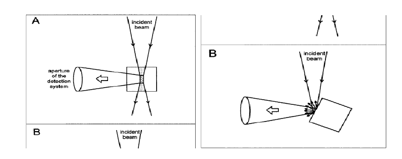

The fluorescence spectral intensity as well as spectral distribution of a fluorophore depend on its concentration. Various kinds of effects and interactions come into play with the increasing fluorophore concentration which affect the fluorescence spectra in many ways, such as via self-absorption, concentration quenching, etc. In general, the fluorescence intensity first increases with the concentration of the fluorophore and then decreases after reaching a maximum. The fluorophore concentration effects vary depending on the precise geometry of the sample illumination versus emission beam recording. For analytical applications, a linear relationship between fluorescence intensity and concentration is desirable. It is therefore very important to study the fluorophore concentration effects on their fluorescence spectral characteristics.

To demonstrate how the fluorescence spectrum of a fluorophore is affected by the fluorophore concentration.

In order to avoid the transmitted radiation, the emitted fluorescence is usually collected with an right angle observation, i.e., the detection system collects the fluorescence emitted perpendicularly to the excitation beam in a fluorimeter. In such right angle observation, the detection system collects the fluorescence emitted only from the central part of the exciting beam (Figure 1) . The incident beam has to travel a certain path length through the cuvette before reaching the central part of the cuvette. Therefore, there is a possibility of a fraction of the incident beam being absorbed by the sample molecules while the beam travels through them. If the concentration of the solution is large (Absorbance, A, or optical density > ~0.1), a significant part of the incident light gets absorbed before reaching the central part of the cuvette. For instance, if the absorbance (A = log I0/I) at the excitation wavelength is 0.1, for a 1 x 1 cm cuvette, the light intensity at the center of the cuvette (I) will be 0.88 x I0, where I0 is the intensity of the light incident to the cuvette. Since the observed fluorescence intensity is proportional to the intensity of the exciting light, the actual fluorescence intensity or quantum yield will be about 10% less than that observed for an infinitely dilute solution. The decrease in the observed fluorescence due to the absorption of the incident light is known as the primary inner filter effect or excitation inner filter effect. This effect results in decrease in the intensity of the excitation light at the point of observation. The fluorescence photons emitted may get absorbed, if the energies of the emitted photons fall in the region overlapping the absorption spectrum. The attenuation in the observed fluorescence due to absorption of the emitted light is known as the secondary inner filter effect or the emission inner filter effect (self-absorption). This effect distorts the shape of the fluorescence spectrum in the overlapping region. The larger the absorption-emission spectral overlap (i.e., the smaller the Stokes shift), the larger the distortion. The inner filter effects depend on the concentrations or optical densities of the samples. The effect of concentration on fluorescence can be dramatic with fluorophores that have small Stokes shifts like rhodamine 6G. The color of rhodamine 6G solution changes from green to orange (i.e., emission spectra shift to longer wavelengths) with the increasing rhodamine 6G concentration. This is due to re-absorption of the shorter wavelength part of the emission. Attenuation of the blue edge of the emission is most pronounced for fluorophores that have significant overlap of the absorption and emission bands. When right-angle observation is used, the short-wavelength emission bands of anthracene are attenuated at high concentrations or large optical densities, because these shorter wavelengths are absorbed by anthracene.
Further, at high fluorophore concentrations the fluorophore molecules remain close to each other that can result in fluorescence quenching due to other interactions, such as concentration quenching, excimer formation, etc. All these effects are difficult to correct. Therefore, it is advisory to work with as much as possible dilute solutions. The fluorescence intensity is linearly proportional to the fluorophore concentration and hence to the optical density over only a limited range, only to an optical density of ~0.05. When an use of high concentration or optically dense medium is required, off-center illumination or front-face illumination geometries can be used. These geometries reduce the effective light path length due to the light absorption near the surface of the cuvette.

Figure 1. Geometries of the sample illumination versus emission beam recording: (A) conventional right-angle arrangement, and (B) front-face illumination. (Courtesey: B. Valeur, Molecular Fluorescence: Principles and Applications, 2002, Wiley-VCH, Weinheim.)

- Prepare 10-3 M, 10-4 M, 10-5 M, and 10-6 M solutions of anthracene in spectroscopic grade cyclohexane. Note that very dilute solutions are not prepared directly. Lower concentration solutions are prepared via dilution of higher concentration solutions.
- To take a particular solution, first click on the appropriate concentration on the concentration selection bar and then on the volumetric flask. For measurement, start with the most dilute solution first (here, 10-6 M) and proceed to next higher concentration and so on.
- Carry out absorption and emission measurements as follows.
- Take a quartz cuvette (path length, 1 cm x1 cm) by clicking on it for spectrophotometric measurement. Quartz cuvettes for spectrophotometric measurements are transparent only on two opposite sides, unlike the all-side transparent quartz cuvettes used for fluorescence measurements.
- Click on the 5 mL capacity pipette to collect 3 mL of the experimental solution which will be transferred into the quartz cuvette. In real operation, one has to set the volume to 3 mL in the pipette and an appropriate tip should be attached prior to dipping it in the solution.
- Click on the pipette to draw the solution into it.
- Click on the pipette to take it out of the volumetric flask.
- Click on the pipette again to transfer the solution into the cuvette.
- To start the absorption spectral scan, click on the pop-up Start Absorption Measurement .
- Turn on the spectrophotometer clicking on the power button. In real operation, it takes approx. 30 min for initialization of the instrument.
- Open the lid of the sample chamber of the spectrophotometer by clicking on the lid for placing the sample in the cell-holder.
- Click on the cuvette to place it in the sample holder. One has to use pure solvent as the sample blank or reference in this measurement. Here a double beam spectrophotometer is shown.
- Close the chamber lid by clicking on it.
- Open the measurement set-up screen by clicking on the absorption measurement icon on the computer monitor.
- On the screen, enter the wavelength range: Start: 400 nm End: 260 nm. In real operation, the wavelength range of incident light for the sample is chosen and the wavelength scan is run via the accompanied computer software. One can run the scan in absorbance (A) or transmittance (%T) mode.
- Click on the green 'Start' button on the measurement set-up screen to run the wavelength scan. Observe the wavelength scan.
- Click on 'Close' button when spectral scan is complete. In real operation, the scan data are stored in the computer. The instrument stores data and therefore asks for the Sample File name. One enters a file name to save the data.
- To take the cuvette out of the sample chamber, first click on the sample chamber lid to open it and then on the cuvette.
- Close the sample chamber lid by clicking on it.
- Click on the pop-up: Start Fluorescence Measurement .
- Turn on the spectrofluorimeter by clicking on the power button. In real operation, it takes approx. 30 min for initialization of the instrument.
- Click on the spectrophotometric quartz cuvette to transfer its content into an all-side-transparent quartz cuvette of path length 1 cm x1 cm for the fluorescence measurement.
- For placing the sample in the instrument, open the lid of the sample chamber of the spectrofluorimeter by clicking on the lid.
- To place the cuvette in the sample holder of the spectrofluorimeter, click on the cuvette.
- Close the lid of the sample chamber by clicking on the lid.
- Open the instrument set-up screen by clicking on the fluorescence icon on the computer monitor.
- Select the Emission Scan Mode on the screen.
- On the screen, enter the Excitation wavelength: 360 nm, Emission Start Wavelength: 370 nm and Emission End wavelength: 460 nm. One chooses the Excitation Slit(nm) and Emission Slit(nm) values (here 5 nm/5 nm) and the scan speed value (here medium ) also.
- To run the wavelength scan for emission spectrum, click on the 'OK' button on the set-up screen. One has to be sure that the solvent blank does not fluoresce in the wavelength range of interest.
- Click on 'Close' button when spectral scan is complete. In real operation, the scan data are stored in the computer. The instrument stores data and therefore asks for the Sample Filename. One enters a file name to save the data.
- To take out the cuvette out of the sample chamber, first click on the sample chamber lid to open it and then on the cuvette.
- Close the lid of the sample chamber by clicking on the lid.
- Click on 'Reset' button to start over the measurements.
- Select the next higher concentration solution (10-5 M) for measurement by clicking on the concentration selection bar and carry out the Emission scan. If one uses the same cuvette for all the measurements, the cuvette should be rinsed a few times with the experimental solution to be analyzed prior to filling it up with the solution.
- Repeat the Emission scan measurements for two other solutions (10-4 M and 10-3 M).
- Collect all data by clicking on the Data tab.
- Find out the absorption-emission overlapping region for 10-6 M anthracene. Determine the Stokes Shift.
- Discuss how the maximum emission wavelengths and the intensities of the shortest wavelength emission bands of anthracene change with increasing concentration of anthracene.


Pre-Experiment
- Mention three different ways by which the fluorophore concentration can affect the fluorescence spectral characteristics.
- Mention two ways by which one can avoid inner filter effects.
- Explain how fluorophores with large Stokes shifts are less sensitive to the inner filter effects.
- Mention the geometrical as well as the mathematical reason for which the fluorescence intensity of a fluorophore is proportional to the concentration over only a limited range of absorbances. (Hint: Mathematical: IF = kΦF I0 (1 e-2.3εcl ) and (1- e2.3A) = 2.3 A, when A << 1)
- What kinds of illumination geometries are useful for fluorescence studies of optically dense samples or highly scattering solutions?
- What kind of illumination geometry should one use to minimize the excitation inner filter effect?
Post-Experiment
- Why should one start the measurement with the lowest concentration first and go on to the next higher concentration while doing the measurement?
- Why should one always rinse the cuvette with the experimental solution prior to filling up of the cuvette with the experimental solution?
- What kind of illumination geometry was used in this experiment?
- Why does the shorter wavelength part of anthracene fluorescence get attenuated unlike its long wavelength part?
- Why does the fluorescence attenuation increase with the increasing anthracene concentration?

- J. R. Lakowicz, Principles of Fluorescence Spectroscopy, 2nd Ed., Kluwer Academic/Plenum Publishers, New York, London, Moscow, Dordrecht, 1999.
- B. Valeur, Molecular Fluorescence: Principles and Applications, 2002, Wiley-VCH, Weinheim.
- J. R. Albani, Principles and Applications of Fluorescence Spectroscopy, 2007, Blackwell Science Science Ltd, Oxford, UK.
- P. Patnaik, Dean s Analytical Chemistry Handbook, 2nd Edition, McGraw-Hill Handbooks.
- F. A. Settle, Handbook of Instrumental Techniques for Analytical Chemistry, 1st Edition, 1997, National Science Foundation, Arlington, Virginia.
- D. M. Jameson et al. in Basic Concepts in Fluorescence, Fluorescence: Basic Concepts, Principles Aspects and some Anecdotes, Methods Enzymol. 2003, 360, 1.
- P. Atkins and J. D. Paula, Atkin's Physical Chemistry, 9th Edition, Oxford University Press.
 Experiments
Experiments Feedback
Feedback